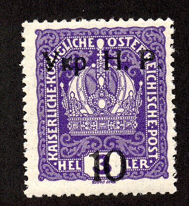
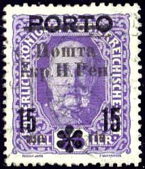

{kind=link}



Return To Catalogue - Austria - Ukrain - Russia
Note: on my website many of the
pictures can not be seen! They are of course present in the
catalogue;
contact me if you want to purchase the catalogue.
'5 YHP. H. P.' on 15 h red '10 YHP. H. P.' on 3 h violet '10 YHP. H. P.' on 6 h orange '10 YHP. H. P.' on 12 h blue
Value of the stamps |
|||
vc = very common c = common * = not so common ** = uncommon |
*** = very uncommon R = rare RR = very rare RRR = extremely rare |
||
| Value | Unused | Used | Remarks |
| 5 on 3 h | *** | *** | |
| 10 on 3 h | R | R | |
| 10 on 6 h | RR | RR | |
| 10 on 12 h | RR | RR | |
Very dangerous forgeries exist of these overprints!

(Reduced size)
This overprint exists on various stamps of Austria of the period 1916-1918 and also on postage due stamps of Bosnia of 1904 and military post stamps of Austria. Most of them are rare to very rare. Examples:

3 h violet 5 h green 6 h orange 10 h red 12 h blue 15 h red 20 h green 25 h blue 30 h violet 40 h olive 50 h green 60 h blue 80 h brown 90 h lilac 1 K red on yellow 2 K blue 3 K red 4 K green 10 K violet
Value of the stamps |
|||
vc = very common c = common * = not so common ** = uncommon |
*** = very uncommon R = rare RR = very rare RRR = extremely rare |
||
| Value | Unused | Used | Remarks |
| 3 h | c | ** | |
| 5 h | c | ** | |
| 6 h | c | ** | |
| 10 h | c | ** | |
| 12 h | c | ** | |
| 15 h | c | *** | |
| 20 h | c | *** | |
| 25 h | c | *** | |
| 30 h | c | *** | |
| 40 h | c | *** | |
| 50 h | * | *** | |
| 60 h | * | *** | |
| 80 h | * | *** | |
| 90 h | * | *** | |
| 1 K | * | *** | |
| 2 K | ** | RR | |
| 3 K | *** | RR | |
| 4 K | *** | RR | |
| 10 K | *** | RR | |
Stamps of Austria overprinted with a lion and Ukranian text, the values 3 h violet, 5 h green, 10 h red and 20 h blue exist. I've been told that the next stamp is a issue for the city of Lviv, according to 'Les timbres de phantaisie' (of Georges Chapier, in french), this was a speculative issue:
These overprints were issued as 25-stamp sheets
in which every position is unique. In this overprint there are
two distinct breaks on the left edge of the overprint. These are
the distinguishing characteristics of genuine stamps. A book by
John Bulat seems to have been written on this issue (I haven't
seen this book personally, the above information was obtained
thanks to Bruce B. Jarvis).
(Reduced size)
I have seen the values 10s blue and green, 20 s red and blue, 50 s violet and red and 1 R brown and violet, the value 10 R blue and red also seems to exist (all imperforate).
The words 'C.M.T.' mean 'Comandamentul Militar Teritorial'. The overprint was done in black, blue or red on normal stamps of Austria of the period 1908 to 1917 and on postage due stamps. No doubt many of these overprints were forged.
On 1908 postage stamps 40 h on 3 h On 1916-18 issues
40 h on 3 h 40 h on 5 h 40 h on 6 h 40 h on 10 h 40 h on 40 h 60 h on 60 h 60 h on 1 K 1 K 20 h on 50 h 1 K 20 h on 60 h 1 K 20 h on 80 h 1 K 20 h on 90 h 1 K 20 h on 1 K On 1917 issue (Emperor Charles)
60 h on 15 h 60 h on 20 h 60 h on 25 h 60 h on 30 h On Postage due stamps of 1916
(Reduced sizes)
40 h on 5 h 40 h on 10 h 60 h on 15 h 60 h on 20 h 1 K 20 h on 25 h 1 K 20 h on 30 h 1 K 20 h on 1 K On postage due stamps of 1917 40 h on 15 h on 36 h 40 h on 20 h on 54 h 60 h on 15 h on 36 h 60 h on 20 h on 54 h 1 K 20 h on 20 h on 54 h 1 K 20 h on 50 h on 43 h
{kind=link}
{kind=link}